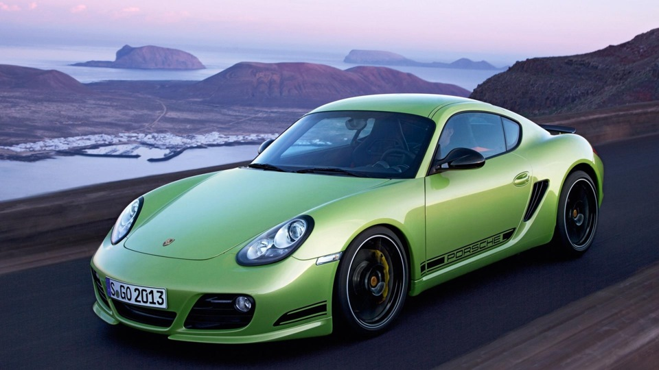

Порше: плюсы и минусы

Порше — это не просто машина, это символ скорости и стиля. Но давайте
разберёмся, что же в нём хорошего, а что может вызывать вопросы.
Плюсы:
-
Производительность: Порше предлагает отличную
динамику разгона и высокую скорость. Это настоящий спортивный
автомобиль!
-
Управляемость: Благодаря высокому качеству подвески и
системы рулевого управления, ездить на Порше — одно удовольствие.
-
Дизайн: Эстетика Порше всегда на высоте. Эта машина
привлекает взгляды и вызывает восхищение.
Минусы:
-
Цена: Порше не из дешёвых, и его обслуживание тоже
может быть довольно затратным.
-
Комфорт: Хотя это спортивный автомобиль, комфорт
может уступать классическим купе, особенно на долгих поездках.
-
Надежность: Несмотря на высокое качество сборки,
некоторые модели могут требовать частого технического обслуживания.
В общем, Порше — это отличный выбор для любителей скорости и стиля, но
стоит учитывать все плюсы и минусы перед покупкой. Если ты ищешь что-то
особенное, то это может быть именно твой выбор!